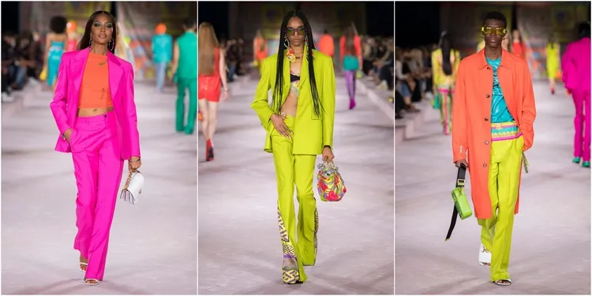
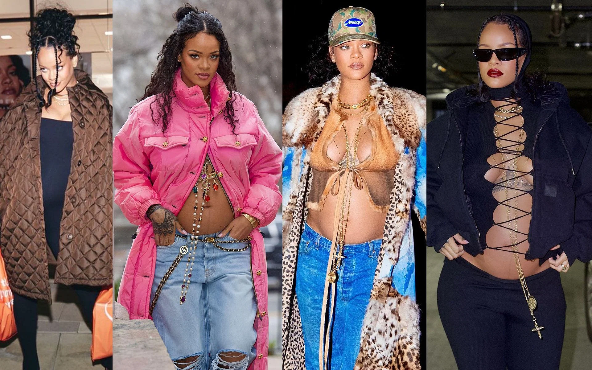

Modes tendences 2022
Modes tendences 2022
Krāsas!
Sakam nē neitrālām krāsām, un jā košām un ļoti izceļošām krāsām:)
Zinot cik viegli var savilkt kopā neitrālās krāsa (brūnu,pelēku u.tml.), šo pavasari vairāk modē ir spilgtas krāsas, bet arī nav nekāda vaina maigajiem toņiem

2022 gada topošo māmiņu stils
Unikālā modes ikona un slavenā dziedātāja Rhianna
Šo ziemu 3.februarī viena no iemīļotākajām dziedātāja Rhianna atklāja visai pasulei kad viņa ir stāvoklī! Zinot to cik viņa stilīgi ir ģērbusies visus pārējos gadus, protams mēs zinājām kad Rhianna mūs pārsteigs ar ļoti pašpārliecinošiem drēbju komplektiem.

Jada Pinkett Smith Socialaja medija "Twiter" uzrakstija šādi “Who says you can't wear see thru fits when you're preggers???” un ielika salīdzinājuma bildi ar Rhianna!
Stormi Webster
4 gadus vecā Stormi Webster ir Kylie's Jenner's un Traviss Scott meita, bet ģērbjas stilīgāk par lielāko daļu mūsu skolā.Bet viņa var ģērbties katru dienu savādākā noskaņokumā